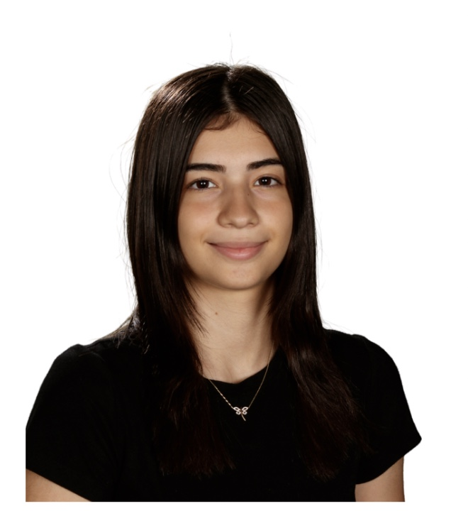

Autoguidance for Diffusion Models
Improving posterior sampling with PyTorch. Paper in progress.
I’m a Computer Science student and researcher at Caltech, working at the intersection of machine learning, neuroscience, and intelligent systems.
I build research tools and software—from diffusion-model methods and neural simulations to mobile apps and autonomous robots.

My interests sit between machine learning and computational neuroscience. I’m especially interested in diffusion models and inverse problems, neural electrophysiology, and systems that turn difficult technical ideas into useful tools.
Improving posterior sampling with PyTorch. Paper in progress.
A Swift app for basketball training, with more than 1,000 App Store downloads.
An EEG-controlled game developed in the Shimojo Lab using Unity.
Machine-learning pipelines and neural simulation work using Jaxley.
A ROS2 robot using multi-sensor fusion, with 95% retrieval accuracy.
I’ve worked across AI research, robotics, mobile apps, and full-stack development. I like taking complicated ideas and turning them into simple, useful tools.
Outside the lab, I play basketball, make mac and cheese, and occasionally celebrate the end of a Caltech week with Sichuan firecracker chicken.
Tools: Python, PyTorch, Jaxley, C++, TypeScript, Swift, ROS2, Unity, Firebase, and Convex.
I’m always glad to talk about research, new projects, or opportunities to build something useful.
zeynep.goktepe.05@gmail.com